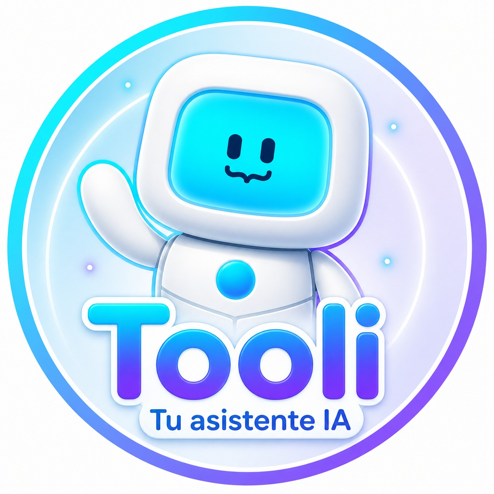

Presenta especializaciones, maestrías y doctorados con costos y requisitos actualizados.
Responde preguntas complejas con GPT-4 entrenado con la base de conocimiento de la UTB.
Registra nombre, correo, WhatsApp y programa de interés directamente en Google Sheets.
Consulta el turno y fecha de matrícula asignados al código estudiantil.
Descarga el PDF del recibo desde el portal Iceberg de forma automatizada.
Transfiere la conversación a un asesor humano en Chatwoot con el contexto completo.